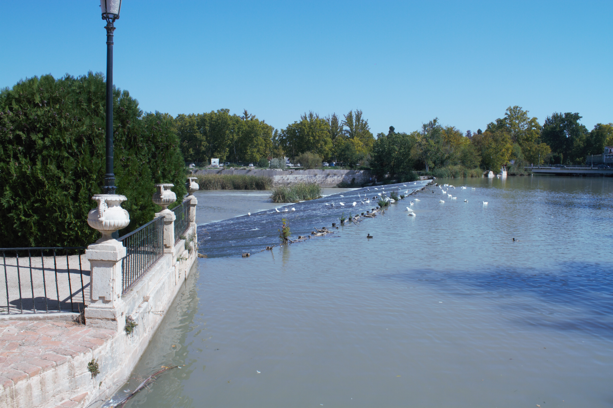
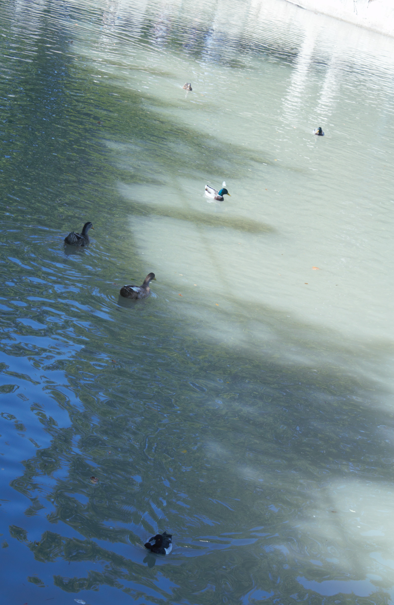

La llamada Presa de Palacio, es uno de los elementos más vistosos y destacados en los jardines de Aranjuez. Desde su creación ha sufrido cambios de modernización pero mantiene su esencia y funcionalidad, la cual era permitir la navegabilidad del río, filtrar el agua a la ría para la instalación de molinos y dividir el curso natural del río dando un estilo propio a la imagen del Palacio así como aislar el Jardín de la Isla.
La forma actual de la presa data de 1751 y fue modernizada en 1830 sustituyendo el molino por accionadores, lo que permitió una vista más limpia y natural del paisaje.
